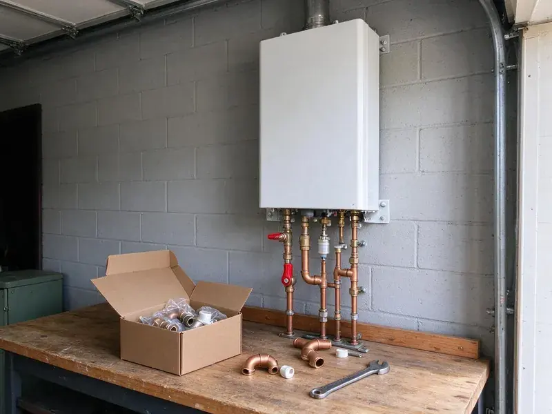

Water Softener Installation in Mililani Mauka, HI
HKL Plumbing installs water softeners that cut scale, spotty dishes and dry skin from hard water in Mililani Mauka, HI.
- Quick Installs
- Quick Softener Installs
- Written Pricing
- Experienced Hawaii Plumbers

Need a Water Softener Installed in Mililani Mauka, HI?
Contact HKL Plumbing for a no-cost estimate on a whole-home softener.
Water Softeners for Mililani Mauka, HI Homes
HKL Plumbing tests your water, recommends the system and installs it on your existing loop or a new one. We program the control valve, fill the brine tank with the right amount of salt and walk you through refills before we leave. Most installs take one visit.
Some of what we do:
- Every major brand
- Carbon filtration and salt-free units
- Loop installs and bypass valves

Additional Plumbing Installation Services in Mililani Mauka, HI
We install water heaters, pumps, lines, and fixtures across Mililani Mauka, HI with careful, permitted work that passes inspection the first time.


Customers
Why Choose HKL Plumbing for Water Softener Installation in Mililani Mauka, HI?
Every softener we install follows local plumbing code and the manufacturer instructions. That covers the bypass, the drain air gap, the overflow line on the brine tank and the electrical outlet for the control valve. Shortcuts cause leaks.
- Cleaner Home, Less soap scum and hard water spots on fixtures and dishes.
- Better Water, Soft water cuts mineral buildup and changes how water feels in the shower.
- Appliance Life, Shield your water heater, dishwasher and washer from mineral buildup.
Citywide Coverage
Water softener installs in every neighborhood across Mililani Mauka are covered by HKL Plumbing. Every side of town is on our regular routes.
Experienced Team
Our team knows local water and its effect on plumbing. Their picks balance results with salt use and price.
Safety-First Approach
We follow local code when adding loops or changing plumbing. Control valves plug into proper, safe outlets.
Trusted Certified Mililani Mauka Plumbing Services Professionals
At HKL Plumbing, we are proud to offer certified plumbing services throughout Mililani Mauka, HI. Credentials matter in this trade. Every repair, install and maintenance visit follows strict safety and quality rules, and the plumbers doing the work carry recognized industry credentials.
Call Us Now PHCC Plumbing Contractor Recognition
PHCC Plumbing Contractor Recognition Better Business Bureau (BBB) Accreditation
Better Business Bureau (BBB) Accreditation Angi Certified Pro
Angi Certified Pro ISO 9001 Quality Management Certification
ISO 9001 Quality Management CertificationSoftener and Filter Installs in Mililani Mauka, HI
Combination Softener and Carbon Filter Systems in Mililani Mauka, HI
City water often carries chlorine or chloramine that affects taste and smell. Putting a carbon tank in front of the softener takes out chlorine and keeps it from wearing down the resin. You will taste it. We install twin-tank setups or dual-stage units.

Water Softener Replacement Services in Mililani Mauka, HI
Worn-out softeners usually show it in one of two ways, hard water at the tap or a brine tank that never drops. Our crew pulls the old system, checks the loop and drain line and installs a model matched to your water today. We haul away the old one. The work is usually done in a few hours.
Commercial Water Softener Installation in Mililani Mauka, HI
Restaurants, hotels and laundromats feel hard water in their equipment first. Commercial softeners we install use larger resin tanks or twin-tank alternating systems so soft water is available around the clock, even during regeneration. Dishwashers and boilers last longer. We schedule around your hours.
Reverse Osmosis Drinking Water Systems in Mililani Mauka
Reverse osmosis pushes water through a fine membrane that removes most dissolved solids, including the sodium a softener adds. Our RO installs go under the sink with their own faucet, and we can tie in the fridge or ice maker too. Pairs well with a softener. We can handle filter changes.
High-Efficiency Water Softener Installation in Mililani Mauka
High-efficiency softeners use upflow brining and metered valves to cut salt and water use. Compared with an older timer-based unit, a modern metered softener can use roughly half the salt and noticeably less regeneration water each month. The savings add up. Several models are available.
Culligan Water Softener Installation in Mililani Mauka
Culligan systems are common in homes around here, and we install and connect them. We follow Culligan's requirements for the drain, bypass and electrical, and we program the system for your tested hardness so it does not over-regenerate. Connections and setup included. A loop saves time.
Softener Loop Installation in Mililani Mauka
No loop? A softener loop is a pair of capped stubs on the main line, usually in the garage, that lets a softener be connected without cutting pipe later. We add the loop. Outdoor taps can stay on hard water, which saves salt. Future service gets easier too.

Ecodyne Water Softener Installation in Mililani Mauka
Ecodyne softeners are sold at many home stores, and we install them for homeowners who already bought one. Install follows the manufacturer manual for bypass, drain and overflow, then we set hardness and regeneration. Bring your own unit. We set it up for you.
Nearby Water Softener Installers in Mililani Mauka, HI
Soft water makes a difference you notice in the first shower. We work all over town and the nearby areas, with most installs scheduled within a few days of your call. Scheduling is easy.
Searching for water softener installation near me in Mililani Mauka, HI usually starts with scale on a new faucet. HKL Plumbing keeps local crews close and test kits on every truck, which means a hardness test on the first visit and an install soon after. No charge for the test.
HKL Plumbing at a Glance
- Licensed and insured plumbers serving Mililani Mauka, HI
- Same-day appointments and 24/7 emergency response
- Clear written estimates, no hidden fees
- 4.8-star rated by 529+ Hawaii customers
Mililani Mauka Map
Mililani Mauka Information
- Population
- 21,075
- Area codes
- Local
- Service area
- Mililani Mauka and communities within 40 miles
- Nearby
- Wahiawa, Mililani Town, Waipio, Schofield Barracks
Hard water leaves a white crust on faucet aerators and a layer of scale in the bottom of the water heater, so a softener pays off in Mililani Mauka, HI homes. Some rural homes in Hawaii rely on rainwater catchment, which needs good filtration and disinfection to keep tanks and fixtures in safe shape.
Talk to a Plumber
Call HKL Plumbing for reliable plumbing work done by licensed pros in Mililani Mauka, HI.
Our Specialized Plumbing Services in Mililani Mauka, HI
At HKL Plumbing, you get every kind of plumbing service from one company across Mililani Mauka, HI. From leak detection to full system installs, our team works fast and charges fair prices on homes and commercial properties alike. Explore our core services below:


How We Install a Water Softener in Mililani Mauka, HI
From the first test to the final setup, HKL Plumbing keeps the install clean in Mililani Mauka, HI.
Request a Quote
Call us at (808) 649-6718 to set up a visit. We test your water and give you a written quote with no obligation.
System Selection
Our plumbers help you pick a softener based on hardness, use and budget.
Installation
Licensed plumbers install the softener, with every connection done to code, then test it.
Frequently Asked Questions About Water Softener Installation in Mililani Mauka
Most Mililani Mauka, HI softener installs land between $1,500 and $4,000. The price usually includes the equipment and labor, with extra plumbing shown as its own line. Capacity affects price. We give written pricing up front.
Three to six hours covers most standard installs. More complex jobs or ones with major plumbing changes can take a full day, and we keep your water off for as short a time as possible.
Our workmanship carries a warranty, and the equipment has its own manufacturer coverage. Tanks and control valves usually carry 5 to 10 years, and we give you every warranty document for your system after the install. Keep the receipt.
On an existing loop, installs typically take two or three hours. A new loop adds a few hours.
Fleck, Culligan, Ecodyne and Kenmore are some of the brands we install. We help you compare models and choose the one that fits your water and budget. Size matters more than brand.
Homes with hard water usually benefit from one. Some rural homes in Hawaii rely on rainwater catchment, which needs good filtration and disinfection to keep tanks and fixtures in safe shape. A softener keeps that scale out of heaters and fixtures.
Control valves usually carry about 5 years, and tanks often 10 or more. Our labor has its own warranty.
Half a day covers most residential installs, usually three to six hours. The time depends on your existing plumbing, whether a loop is already in place and which type of system goes in. A loop saves hours.
What People Are Saying About Our Plumbing Experts?

Brian W.
I smelled gas behind the dryer and called right away. The plumber found a corroded flex connector, replaced it, and pressure tested the whole line before turning the gas back on. He let me watch the gauge hold steady for fifteen minutes.
Gas Line Repair · Wahiawa, HI
Patricia H.
We had a slab leak that two other companies could not find. HKL Plumbing located it in under an hour with a listening device. They rerouted the line through the attic instead of breaking up the floor, so we kept our kitchen tile.
Slab Leak Repair · Pearl City, HI
Daniel K.
A pipe burst in the garage ceiling at 11 at night. Someone answered on the second ring, and the plumber was in my driveway about fifty minutes later. He shut off the main, cut out the split section, and had water back on before 2 am.
Emergency Plumbing · Pearl City, HICarlos V.
Our house still had galvanized pipe, and upstairs the shower was a trickle. The crew repiped everything in PEX over three days and patched every drywall hole before they left. The pressure difference is night and day.
Repiping · Wahiawa, HINathan E.
Our tankless heater kept throwing an error code and shutting off mid shower. The tech flushed the heat exchanger, which was full of scale, and replaced a bad flow sensor. Hot water has been steady for half a year now.
Water Heater Repair · Waipio, HIPaul B.
Our pit pump ran nonstop even in dry weather. The plumber found the check valve was stuck open, so the same water kept cycling back into the pit. New valve, new float switch, done in an hour. It runs quiet now.
Sump Pump · Waipio, HI